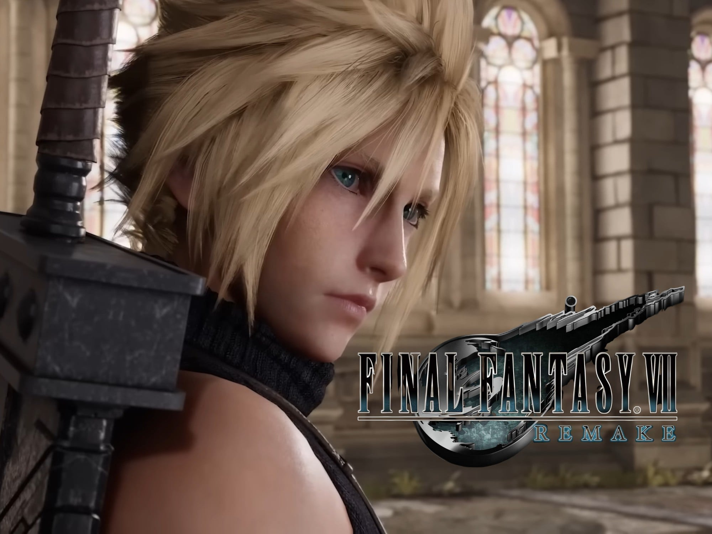

Cloud Strife
Por: Morgo
.Cloud Strife é o protagonista de Final Fantasy VII. Ele começa como um mercenário frio que afirma ser um ex-soldado de elite da Shinra. Na verdade, ele sofreu experimentos com energia Mako e assumiu falsas memórias de seu amigo Zack, mas recupera sua verdadeira identidade para derrotar o vilão Sephiroth e salvar o planeta.